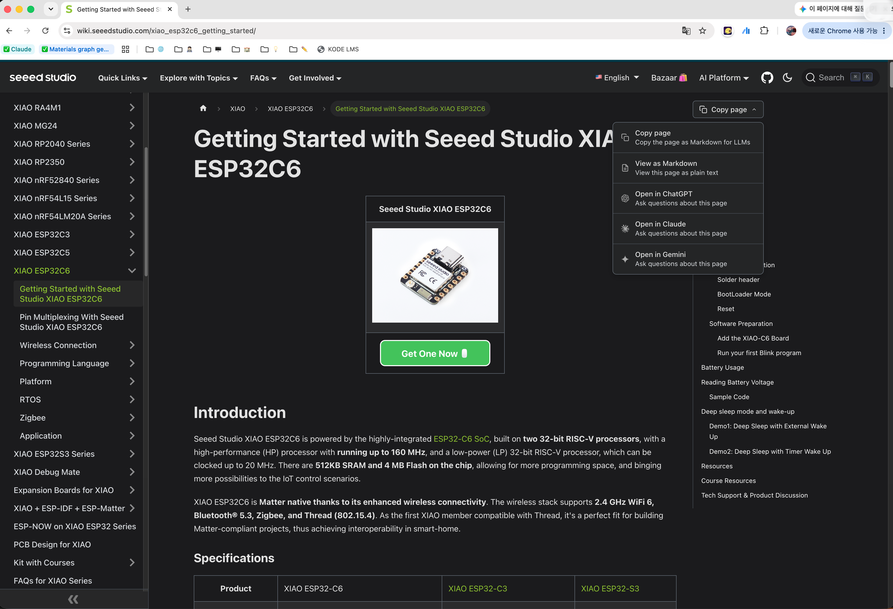

Lumo
The moment your focus drifts, the light brings it back.
Yoon Solmin · Kwon Heejung · Park Sohyun · Jeong Siyun

Hello, I'm LUMO
That lamp is greeting you right now.
During exam season, focus slips
every 47 seconds
Research puts the average human attention span at just 47 seconds. Students and remote workers both live it, but the light in the room knows nothing about that moment.
Existing smart lamps don't know your "state" —
you adjust them yourself
BenQ smart lamp
Brightness and color temperature are set by hand, in an app.
Xiaomi smart light
Again, brightness and color temperature are set by hand every time.
Plain reminder apps
They fire on a fixed schedule, regardless of the user's state.
A light that sees, moves, and advises on its own — Lumo
Vision
Cameras watch what the user is doing.
IoT
Servos let it move and respond on its own.
Data analysis
Behavior data becomes a focus report.
What it is made of
Two cameras — one eye on the desk,
one on the person
Desk Cam
It finds the person and the objects on the desk, then aims the servos at the one that matters now.
Face Cam
Blink and eye-closure ratio (PERCLOS) catch drowsiness and microsleep within 0.5 s.
Person → front zone → target.
The light follows in that order
Why build the "front zone" first
A desk holds far more things nobody is using right now. A book pushed aside, a phone left at the edge, a closed laptop — on screen they are all the same box. So we find the person first and cut a zone in front of them, and only what falls inside is a candidate. The point is to light the book the user is actually reading; without the zone, the light drifts to something unused.
State machine NORMAL → CARRYING → OBSERVING → FOLLOW_OUT · priority book > tablet > laptop·phone
One frame makes a round trip to the server
Which model, and why
240×240 · 195 imagesWhat separated them was person detection, not object detection. Miss the person and no front zone exists, so the target is never chosen.
Latency vs accuracy — where the budget sits
measured end to endThe network costs 3× more than the model. Make the model 3× heavier and it is felt as less than 1.3× — so we spend the leftover budget on accuracy.
Two frames in flight at once
Waiting for the answer before sending the next frame welds frame rate and latency into one number. One frame inferring, one waiting — with two in flight we got 6.5 → 11.5 fps (+77%), and end-to-end response stayed 405 → 411ms, unchanged. Three only lengthens the queue, so you end up looking at stale frames.
Coordinates arrive; the hub makes the angles
The camera is mounted on the lamp head. So the x in the frame is already relative to a head that has turned — not an absolute position, but an offset from center. That changes the whole equation.
We measured none of it — not the FOV, not the distance, not the mounting angle. It is closed-loop, so correcting by however much it is off lands on target by itself.
The share of the error erased in one frame, gain·dt / FOV, must not exceed 1. Above that, the next frame sees the error on the other side and corrects harder — it oscillates.
Lowering that dt bound to 0.2 s — 1.3× the measured worst case of 158ms — let us use 2.5× the gain at the same safety margin. Convergence went 1.2 s → 0.52 s.
The box center wobbles a few px every frame even when detection is fine. Subtract that noise with a deadband, or the head never comes to rest.
The logic came out of the hardware
At first the deadband was a hard threshold — every time the error crossed it the correction switched on and off, so pushing a book slowly made the lamp look choppy. Changing it from a threshold to a subtraction made everything under it fade out smoothly. Not one of these values came from a calculation. Every one came from running it and fixing it.
The model did the seeing.
We wrote the moving
As we just saw, "what is there" was answered by the vision model — YOLO hands over the boxes and ByteTrack puts numbers on them. But "so how far do we turn" is entirely rules we wrote by hand. How the front zone is cut, when the state advances, the gain and deadband values — we chose each one and fixed it on the real hardware.
VLA · Vision-Language-Action
A model that puts out action directly from what it sees and what it is told. A learned policy takes the place where a human writes the rules — feed it one camera frame and "light the book" and joint angles come out.
Action chunking from LeRobot ACT — one observation emits targets for the next ten ticks, and overlapping predictions are averaged by age. Across the 0.2–0.45 s detection gaps, the share of time the target kept moving went 0% → 50%.
The rules we have hold only for the situations we have seen. A different desk, different objects, and the values have to be tuned again. A policy fills that place with data — and because our servos are SO-ARM100 class, the path to collecting that data by teleoperation is already open.
How do we know someone is drowsy
MediaPipe Face Landmarker
One model gives all three at once. We turned all three on from the start because switching one on later means only the logs from that point hold any value.
This is how we detect it
The measure is the fraction of time the eyes are closed (PERCLOS). At rest ours measures 4.4%, so there is plenty of room up to 15%. Eye size differs person to person, so a 5-second calibration sets the baseline first.
We do not judge by head angle
A head nodding off and a head looking down at a notebook are the same geometry. Include it and the alert fires every time you take notes — and you misdiagnose the cause as an eye-threshold problem.
Angle is used in exactly one place: past 45°, the eyes project at a slant and the metric inflates 4×, so we mark that stretch as "cannot see right now" — nothing else.
When nothing is happening,
it stays quiet and matches the room
Brightness — dim room, dim lamp
In between we map linearly and ease into it. Use the target value raw and sensor noise makes the strip flicker.
Color temperature — the clock decides
Toward night it grows warmer and dimmer. The time is decided and sent by the laptop — we chose not to put a clock on the board.
The sensor and the LEDs sit on different boards
The desk camera board measures the lux; the face board drives the LEDs. So the lux value crosses the network, and it can drop on the way. If nothing arrives for more than 3 s we hold it as "unknown" and leave brightness alone — read it as 0 and the lamp assumes a pitch-dark room and shuts itself off.
Drowsiness comes in six stages,
and the light differs at every one
At S4, (210, 225, 255) — white pushed toward blue. We went with the view that raising color temperature is what helps alertness.
In the NIGHT band the same S4 is demoted to warm (255, 214, 170). Blue light at night does not wake you — it wrecks your sleep.
The pulse is fixed at 1Hz. The photosensitive-seizure risk band is 3–60Hz, so this sits well clear of it.
A microsleep gets exactly three pulses, and if that repeats three times within 30 minutes we suggest a break instead of pushing harder. Keep pushing harder and people just switch the machine off.
This is how boards get built now
We don't write it a line at a time
Instead of the IDE's buttons we use arduino-cli. Finding the port, compiling, flashing, reading serial — all of it becomes a command, so people and AI handle the board the same way.
The cable is only for flashing
The ESP32 already carries WiFi and BLE on the chip. All three boards join wirelessly, so once flashed they keep running with the USB unplugged.
Don't leave it guessing —
feed it the board's own docs

The Seeed Studio wiki has "Copy page as Markdown for LLMs." Pin maps, bootloader entry, PSRAM options — none of it has to be guessed.
Which board has what flashed on it, and what breaks if you touch it — people and AI read it from the same file.
A new developer can join and write like a professional on day one. The biggest thing this project left us is that the handover document for a person and the document you feed an AI are the same document.
From here on, we show it live
It follows the book
Move the book and the light follows — shown live at the talk.
It detects drowsiness
Shown live at the talk.
Color, brightness, and angle, straight from the app
the angle goes through the laptop to the servos.
AI writes the code.
The physical part still needs human hands
Most of this project's code was written together with AI agents. And yet what blocked us was never the code. Every one below actually cost us time, and not one of them shows up on screen.
The three servo axes fell into a reset loop. Wiring, signals, library — all fine; the only thing blocking us was current. One capacitor ended it.
We cut torque on shutdown and the arm dropped 48°. The code exited normally. Now we set it down first, then release.
Plug into the same socket and the name still changes. With two swapped, we flashed lamp firmware onto the desk camera. Now we read the MAC before flashing.
The open campus network has client isolation turned on, so the board and the laptop cannot see each other. It is the kind of failure with no code to debug.
So here is what we did
People touched it, measured it, and wrote it down. Measured values and overturned assumptions went into the repo's docs — so the next person, and the AI in the next session, don't get burned twice in the same place. Using AI well turned out to be a matter of leaving good documentation.
The moment you lose focus,
Lumo notices first.
Guchipachi · Yoon Solmin · Kwon Heejung · Park Sohyun · Jeong Siyun
yoonsoli/lumo-lamp